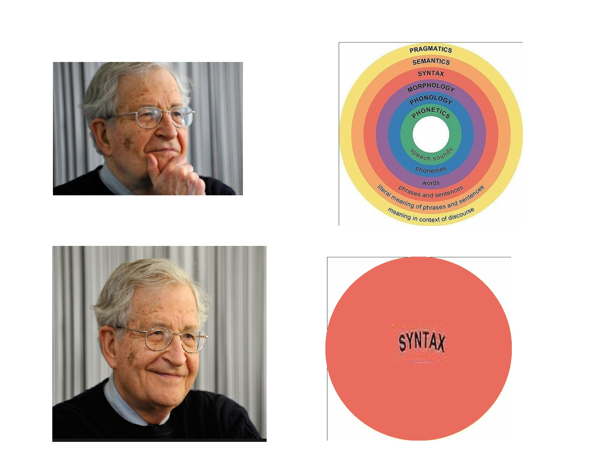 --- # Inflectional Morphology: Verbs ### Dr. Will Styler - LIGN 120 --- ### Today's Plan - Agreement - Tense - Aspect - Mood --- ### Last time, we talked about common inflectional meanings on nouns - This time, we'll move to verbal meaning --- ### Common Inflectional Patterns on Verbs - Agreement - Tense - Aspect - Mood - Other verbal meanings --- ## Agreement --- ## Agreement Marks the identity of the 'actors' and their roles on the verb itself - Also known as 'Concord' - This is helpful for marking grammatical relations! --- ### English agreement marking - Sharon write-s to me - sharon write-3SGsubj to 1sg.ACC --- ### Spanish Agreement Marking * Yo veo el gato * 1sg see.1sgsubj el cat * I see the cat * The arguments aren't marked * *... but the verb (and ordering) lets us know who did it!* --- ### Spanish Agreement Marking * Michael Bay hizo peliculas malas * Michael Bay make.3sgsubj.past movie-pl bad-pl * "Michael Bay made bad movies" * *We know that the plural argument did it!* --- ### This is why Spanish can drop many pronouns - Veo el gato (rather than 'yo veo') - Tiene una tiza. 'He/she has a chalk' - ... but in English, \*Has a chalk. --- ### Agreement can use many ways of showing identity * Person marking (1sg, 2sg, etc) * 2sg did it! * Number marking (singular, plural, etc) * The group with more than one item did it! * Gender marking (masc, fem, neuter) * It was the masculine thing! --- ### More ways of showing identity! * Noun class * It was the large, flat object! * New vs. old information markers * The thing I mentioned first did it! --- ### "What's the difference between case and agreement?" --- ## Case marks roles on arguments! --- ### Russian Case Marking - Will vidye-l koshk-u - Will.NOM see-SG.MASC.PST cat-ACC.FEM - "Will saw the cat." --- ### With case, you make the arguments wear nametags * So you know what role the arguments are playing --- ### Will-NOM see-3sg CAT-ACC <img class="big" src="lotwimg/myroleisagent.jpg"> --- ### Will-NOM see-3sg CAT-ACC <img class="big" src="lotwimg/myroleisobject.jpg"> --- ## Agreement marks identity on verbs! * "Rather than marking the arguments, let's just make sure the verb points to who did it!" --- <img class="big" src="lotwimg/chucknorriswashere.jpg"> --- ### Let's test your skills! --- <section data-background-color=#708cef></section> squirrele eta acornu squirrel.NOM eat acorn.ACC "The Squirrel ate the Acorn" A) "This is case" B) "This is agreement" --- <section data-background-color=#708cef></section> kula-knas Michael Bay Will judge-object.is.evil Michael Bay Will "Will judges Michael Bay" A) "This is case" B) "This is agreement" --- ## So, are we all in... # Agreement!? --- <img class="big" src="humorimg/badpundog.jpg"> --- (OK, Sorry, but a bit of humor is helpful before things get tense) --- ## Tense --- ## Tense Represents the relationship of the event described to another temporal reference point --- ### Generally, the reference time is 'now' - ... but there is such a thing as narrative present --- ### The Timeline 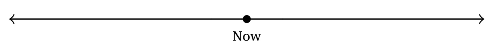 --- ### A three-way tense system 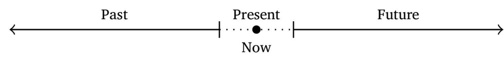 --- ### Two-way tense systems 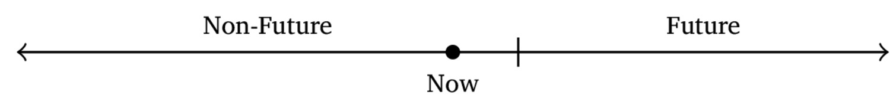 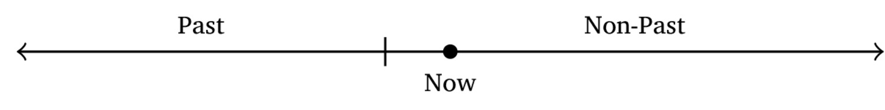 --- ### A non-present tense system 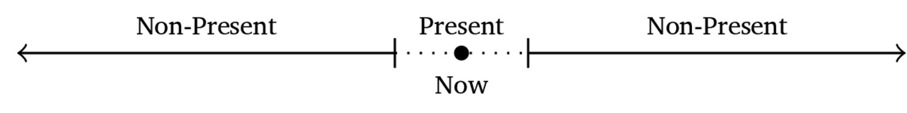 --- ### Tense can get more detailed - Tenses for yesterday, tomorrow - Tenses for next year, last year - Tenses for smaller within-day periods - **... but tense always marks time of action relative to a reference!** --- ... which is different from ... --- ## Aspect --- ## Aspect Aspect marks the temporal nature and boundedness of described events. --- ### Aspect is widely variable - There are many different types of aspect which can be marked - Aspects are often coupled with tense, but don't need to be! - *Tense and aspect are not the same thing!* --- 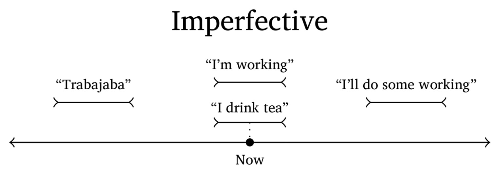 --- 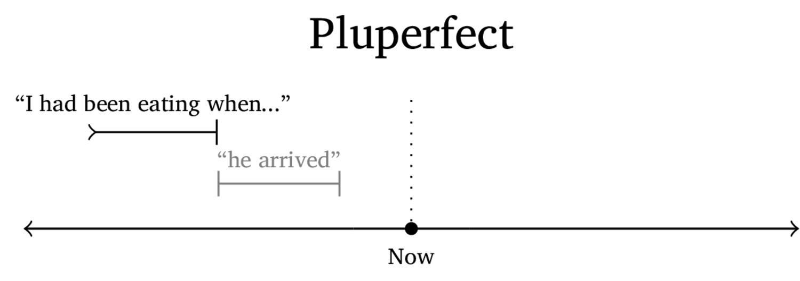 --- 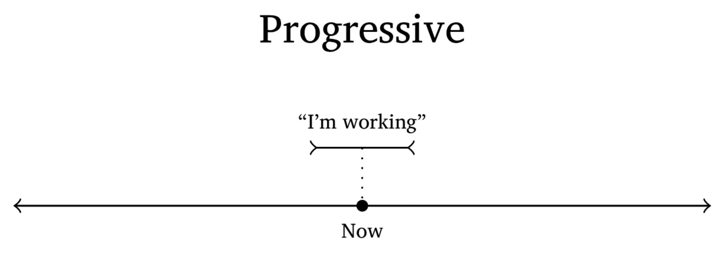 --- <img class="wide" src="diagrams/aspect_habitual.jpg"> --- 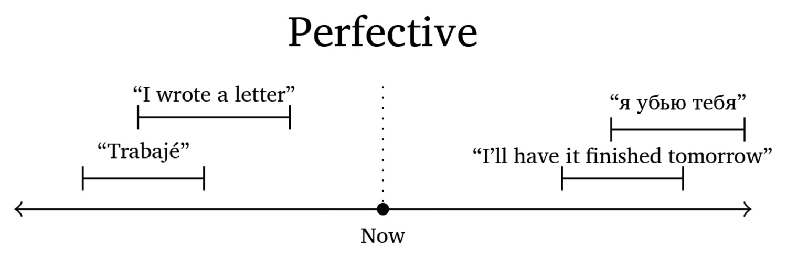 --- 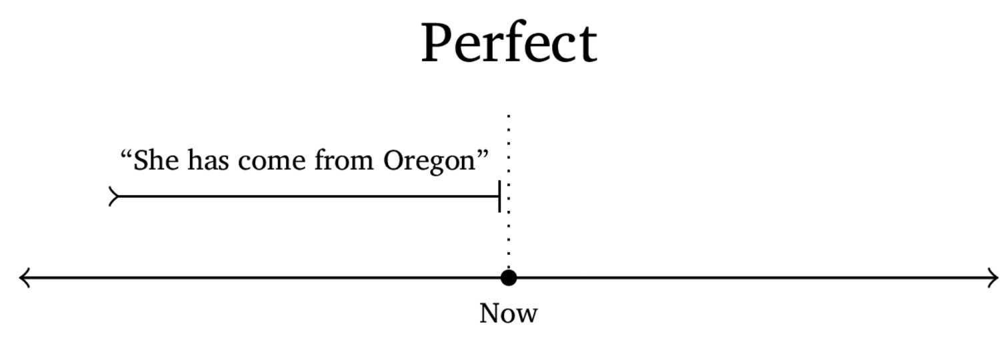 --- 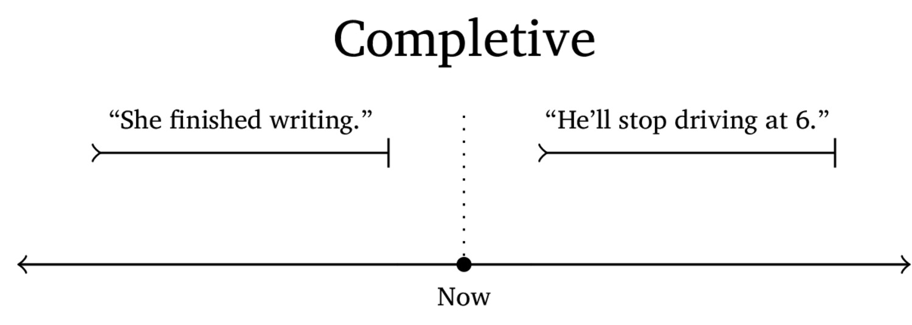 --- 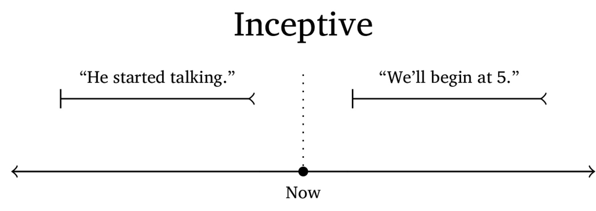 --- 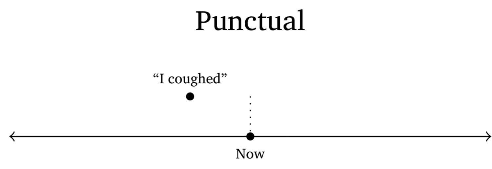 --- 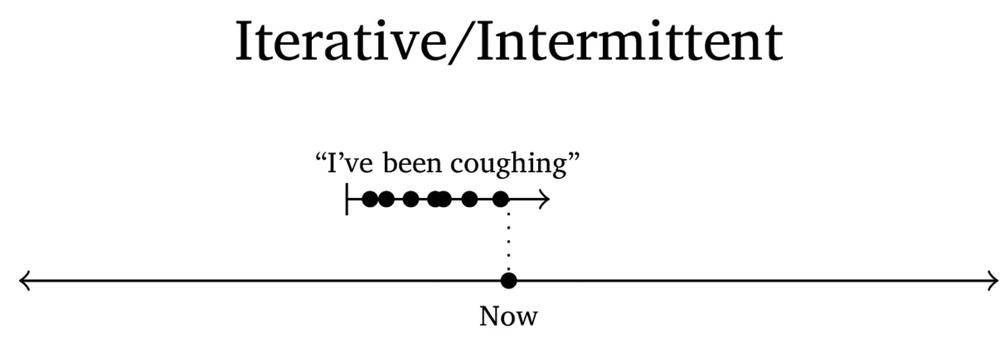 --- ### These aren't all the possible aspects - Sometimes, aspect is marked on verbs - Spanish preterite vs. imperfective - Sometimes, different verbs have inherent aspect - Russian verbs of aspect - Sometimes, other verbs are used - 'I'll start eating tomorrow' - They're all gonna have this same feeling of describing the temporal boundedness and structure of an event --- ## Mood (also known as 'mode' or 'modality') --- ## Mood Grammatical functions which encode the speaker's attitude about the event being described - This is independent of tense and aspect --- ### Many modes exist! - We'll talk about some common modes --- ### Realis vs. Irrealis - "Is it actually happening, or not?" - "I went to the park" vs. "Had I gone to the park..." - Indicative is the only realis mood in most languages --- ### Indicative - Used for factual statements - This is the default - "Will is flailing his arms around" --- ### Subjunctive - Used for imaginary or hypothetical events - "If a pizza were to appear, I would ensure that it <clr>be</clr> eaten" - Maria comería si <clr>tuviera</clr> hambre. 'Maria would eat if she <clr>were hungry</clr>' --- ### Conditional - This event depends on some other situation being true - "I <clr>would go</clr> to the party, if I were invited" - Maria <clr>comería</clr> si tuviera hambre. 'Maria <clr>would eat</clr> if she were hungry' --- ### Potential - Something that's more likely than subjunctive or conditional - "This is probably going to happen" - *Mood is about speaker attitude* - **Epistemic** is even weaker, 'this is actually possible.' --- ### Inferential - Reports events without confirming them - "Andres was at the park." - "I saw him there myself" - "Amber said he was there" - Turkish o gitti vs. o gitmiş --- ### Imperative - Imperatives issue commands, make requests, and give prohibitions - "<clr>Turn off</clr> that Michael Bay movie." - "<clr>Do not open</clr> Pandora's Box" - **Jussive** issues commands to a third person, or generally - "Michael Bay movies are not to be watched" --- ### Deontic - Expresses the speaker's belief that X *should* occur - In the sense of 'it would be better' - "Will should stop eating donuts" --- ### Other Moods - **Optative** - Marks hopes, requests and wishes - **Interrogative** - Marks asking a question explicitly - ... and plenty more! --- ## Other Verbal Markings --- ### Some arguments change the number of participants in a verb's frame - Active vs. Passive voice - "I stole the donut" vs. "The donut was stolen" - Reflexive markers - Marks that the subject and the object are the same - "I bathed myself" - Causative markers - "I didn't do it, but I made somebody else do it" - Reciprocal markers - "We sunblocked each other" - Transitivizing markers - Makes an intransitive verb transitive --- ### Other residents of the verb - Negation markers - Directional markers - "I ran uphill" - Pronouns - da-me el reloj! (give.2SG.IMP-1SG.DAT DET clock) - Noun incorporation - Who needs multiple words, just toss the object right in there! --- ### Wrapping Up - Verbs take lots of morphology - Agreement shows connections between the verb and the arguments - Tense shows the temporal position of events - Aspect talks about their temporal structure and boundaries - Mood gives the speaker's attitude about them - There's more to verbal morphology - ... but you'll find it when you start working with your own languages! --- ## For Next Time - How do we elicit these contrasts? - Then, derivation! --- <huge>Thank you!</huge>